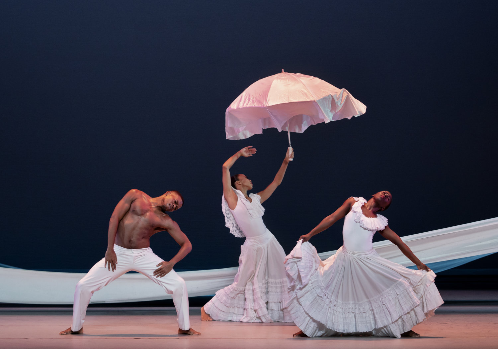
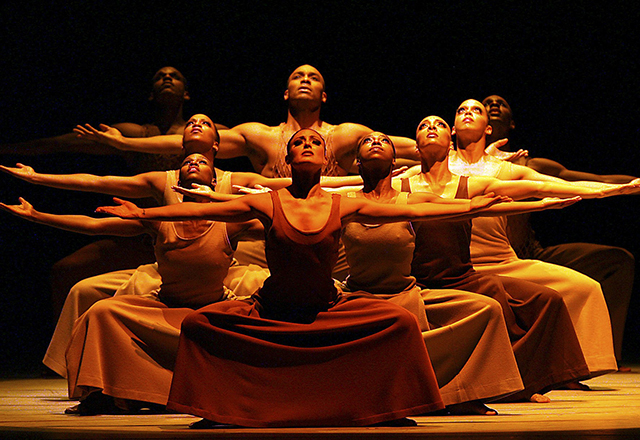
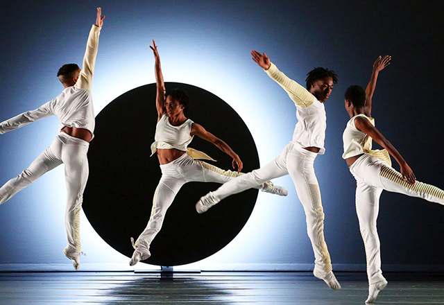
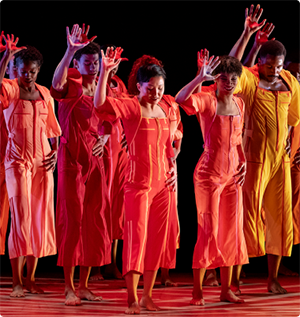

From left, Chalvar Monteiro, Belén Indhira Pereyra, Jeroboam Bozeman, Yazzmeen Laidler and
Daniel Harder in Darrell Grand Moultrie's “Ounce of Faith.” PHOTO: Rachel Papo for The New York Times

Alvin Ailey celebrates the 50th anniversary of “Cry” and a decade of leadership by Artistic Director
Robert Battle at The Music Center in South Pasadena. PHOTO: Paul Kolnik
Alvin Ailey American Dance Theater performing Judith Jamison's, “Divining,” at the Auditorium Theater
in Chicago. PHOTO: Nan Melville

Visually clear, emotionally powerful movement, set to stirring spirituals, has made Alvin Ailey's
"Revelations" the most beloved of modern dance works. PHOTO: Gary Malerba

The Alvin Ailey American Dance Theater, performing the premiere of “EN” by Jessica Lang at the
David H. Koch Theater of Lincoln Center in June. PHOTO: Andrea Mohin for The New York Times
2004's Love Stories was a collaboration among Artistic Director Emerita Judith Jamison, choreographer Rennie Harris, and Artistic Director Robert Battle. Inspired by the African concept of “Sankofa”, which teaches that “we don't know where we're going unless we know where we have been”, this extraordinary ballet celebrates the traditions of African American dance and the rich heritage of Alvin Ailey.
In the ballet's joyful finale, being presented as a standalone piece this season, Battle portrays a luminous future built on the lessons and legacy of the past. The New York Times called it “astoundingly well danced… a breakthrough in creative choreography” and The Atlanta Journal-Constitution proclaimed, “It's a party!”
Love Stories was created through the Ailey New Works Fund, supported by Altria Group, Inc.
This work was supported by the Ailey New Choreography Initiative, sponsored by AT&T.
Major support for Love Stories was provided by Ford Foundation.
Love Stories Finale
Music Credit Information:
Song: “Fingertips Part 1 and 2” written by Clarence Paul and Henry Cosby, Used by Permission of Jobete Music Co. INC. and Stone Age Music.
 Alvin Ailey American Dance Company performs Judith Jamison's dynamic collaboration with Rennie Harris and modern dance maverick Robert Battle. Photo by Paul Kolnik.